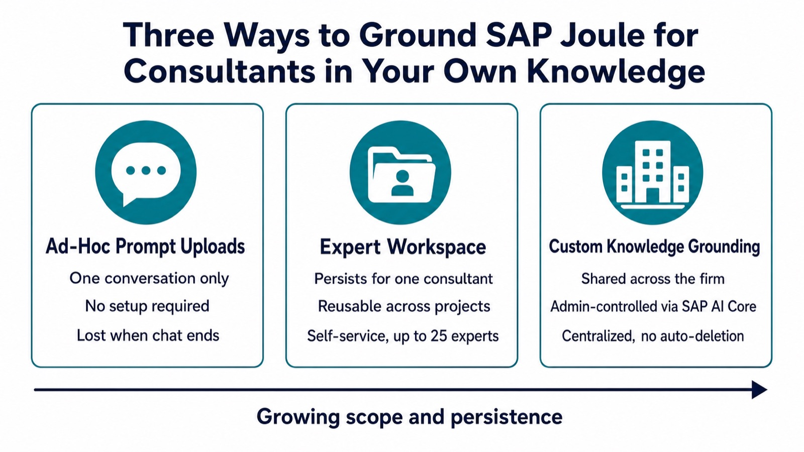

"With Custom Knowledge Grounding, SAP Joule for Consultants generates responses specific to your organization by drawing on your project information and best practices."
— SAP, "What is Joule" documentation
SAP Joule for Consultants already ships with an enormous amount of SAP knowledge built in. But it has never seen your firm's methodology document, your client's specific configuration decisions, or the delivery standard your practice lead wrote three projects ago. Custom Knowledge Grounding is the feature that closes that gap. By the end of this guide you will understand what it actually is, how the retrieval pipeline works under the hood, how it differs from the similarly-named but very different Expert Workspace, and how to set it up without getting lost in SAP's service-naming maze. No prior SAP AI experience required; every term is defined as we go.

First, What Does SAP Joule for Consultants Already Know?
SAP Joule for Consultants is a generative-AI copilot built to boost consultant productivity with fast, reliable answers grounded in exclusive SAP content. Out of the box, it already draws on a knowledge base of more than 18 million pages of SAP documentation and training material, over 9 terabytes of curated content, 100+ SAP certifications, implementation guidance, and a specialized fine-tuned ABAP model trained on 300 million lines of ABAP code and 30 million lines of CDS code, which lets it explain and even generate basic code. Its four core capabilities are Enablement & Discovery (explaining SAP concepts and the product portfolio), Guidance & Instructions (step-by-step setup and configuration help), Support & Troubleshooting, and ABAP Code Interpretation. That is a lot of general SAP expertise. What it does not contain, by default, is anything specific to how your firm or your client actually works. If SAP Joule is new to you more broadly, our plain-language introduction to SAP Joule as an enterprise AI copilot is a good place to start.
Why It Matters: The Problem Custom Knowledge Grounding Solves
SAP frames the problem plainly: organizations spend significant time searching scattered documents, internal knowledge repositories, and project files to find the right information when making decisions or delivering SAP implementations. A generic AI copilot, however well-trained on SAP's own material, cannot answer "what does our firm's methodology say about this fit-gap decision" or "how did we configure this for this client last time." Custom Knowledge Grounding targets three concrete situations: a direct customer optimizing its own SAP processes, an internal consultant navigating complex project frameworks, and a business process consultant advising clients on SAP transformations. In each case, the value is the same: accelerated research, reduced context-switching between tools, and answers that reflect a firm's specific methodologies, policies, and delivery standards rather than generic best practice.
How It Works: A Grounding Pipeline, Not a Bigger Brain
It helps to understand the general mechanism first. Grounding (also called retrieval-augmented generation, or RAG) means an AI system answers by retrieving relevant text from an external source at the moment of the question, rather than relying only on what it learned during training. The flow has five steps: a document is broken into chunks and converted into a vector embedding (a list of numbers that captures its meaning); that embedding is stored in a vector index; when a user asks a question, the question is embedded the same way; the system runs a similarity search to find the document chunks whose meaning is closest to the question; and those chunks are inserted alongside the original question before the whole thing is sent to the language model. The model's answer is "grounded" in real text it can point back to, which is why grounded answers can cite a source and ungrounded ones cannot.
Custom Knowledge Grounding wires this mechanism into SAP Joule for Consultants using four components. A data repository stores your source documents; supported options include Microsoft SharePoint, Amazon S3, SFTP, SAP Build Work Zone, SAP Document Management service, ServiceNow, and Google Drive. SAP AI Core Document Grounding, a separate, generally-available SAP service billed on its own, ingests those documents, chunks and embeds them, and indexes the result in SAP HANA Cloud's vector engine. A Destination Service instance on SAP Business Technology Platform (BTP) then connects that grounding pipeline to SAP Joule, authenticated with OAuth2 client credentials. Finally, an admin enables and connects everything from the SAP Joule for Consultants Console. None of this touches the underlying language model's training: SAP has been explicit that "none of these files are ever used to train the underlying LLM. Your content stays yours."
Remember This
Grounding does not make SAP Joule "smarter" in a general sense. It gives the same model a curated stack of your own documents to search through at answer time. The model is not retrained; your content is retrieved, not absorbed.
A Concrete Walkthrough: Connecting a Document Repository
Setting this up is an admin task, not a consultant-facing one, but seeing the
real steps makes the architecture click. SAP's documentation lays out five
phases. First, upload your documents to a chosen repository, with Object Store
recommended for a fast first setup. Second, provision SAP AI Core with the
extended plan, create a resource group tagged for document
grounding, and run a pipeline that ingests, chunks, embeds, and indexes the
documents until it reaches a FINISHED status. Third, create a
Destination Service instance in BTP, then configure a destination (commonly
named AICORE_DEST) pointing at SAP AI Core's document-grounding
endpoint, with three required additional properties:
HTML5.DynamicDestination and HTML5.ForwardAuthToken set
to True, and AI-Resource-Group set to match your AI Core
resource group exactly. Fourth, an admin opens the Custom Knowledge Grounding tab
in the SAP Joule for Consultants Console and explicitly toggles the feature on,
then connects the destination using either credentials or a JSON service key.
Fifth, the admin monitors the Sources & Pipelines page, which
reports the number of processed documents, the number of connected data sources,
the last sync timestamp, and a status of Completed, Completed With
Errors, or Processing. Once that status reads complete, SAP Joule for
Consultants starts referencing the custom knowledge in the very next new
conversation.
Common Mistakes and Misconceptions
The most common confusion is mixing up Custom Knowledge Grounding with Expert Workspace, a different feature that looks similar on the surface. Expert Workspace lets an individual consultant create a reusable Expert, a named persona with up to 10,000 characters of custom instructions and attached reference files (PDF, Word, text, or images, each up to 10MB, capped at 1GB of total storage per user across up to 25 experts), that persists across that consultant's own conversations. It is self-service, requires no admin setup, and is scoped to one person. Custom Knowledge Grounding, by contrast, is tenant-wide, admin-controlled, billed separately through SAP AI Core, and visible to every consultant once connected, with no automatic deletion of indexed content. A second mistake is assuming new documents appear automatically: the indexing pipeline does not refresh on its own, so adding files to your repository requires re-running the pipeline. A third is forgetting that a Completed With Errors status usually means specific files failed due to unsupported formats, size limits, or content policy issues, not that the whole setup is broken; only the successfully processed documents feed Joule's answers.
Remember This
Expert Workspace is one consultant's personal toolkit. Custom Knowledge Grounding is the firm's shared knowledge base. They solve different problems and can both be active at once, but conflating them is the fastest way to misconfigure either one.
How to Apply It: Choosing the Right Tier
In practice there are three tiers of knowledge enrichment available across SAP Joule, and the right choice depends on how often the knowledge will be reused. For a single one-off question, an ad-hoc file upload directly in the conversation is enough, and it disappears with the chat. For a consultant who repeatedly works in one domain, such as SAP SuccessFactors or a specific client engagement, an Expert Workspace built once and reused across many conversations is the better fit. For knowledge that should be standardized and shared across an entire practice, such as a firm's house methodology or a client's signed-off design documents, Custom Knowledge Grounding is the right layer, even though it carries real setup effort and ongoing SAP AI Core costs per document indexed and token retrieved. Start by piloting with a small, well-defined document set in Object Store, confirm the pipeline reaches a clean Completed status, and only then expand to your full repository. The same staged, prove-it-then-scale discipline applies broadly to AI inside SAP delivery work, a pattern we also cover in how AI is cutting SAP S/4HANA migration timelines.
Where This Fits in the Bigger Picture
Custom Knowledge Grounding is part of a broader shift in enterprise AI copilots: general-purpose knowledge is the starting point, not the destination. The competitive edge increasingly comes from how well a copilot reflects an organization's own accumulated judgment, not just the vendor's documentation. For SAP consultants specifically, that means the difference between a tool that can explain what S/4HANA does in general and one that can explain what your firm decided to do, and why, on the project two clients ago. Understanding the vocabulary here, grounding, vector embeddings, Expert Workspace, and Custom Knowledge Grounding, is the first step to deploying it deliberately rather than bolting on every SAP AI feature at once. For a wider look at where Joule is already delivering measurable results across the enterprise, see our rundown of SAP Joule's top use cases in 2026.